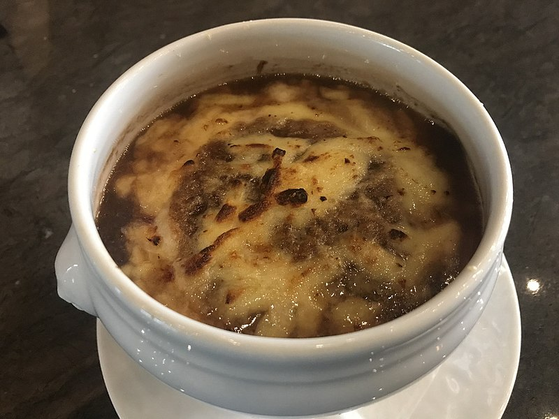

French Onion Soup

Description
Humerous text about french onion soup
Ingredients
- 5 1/4 cups vegetable broth, divided
- 4 Onions, sliced
- 1/8 teaspoon white sugar
- 2 tablespoons all-purpose flour
- 1/2 cup dry white wine
- 1 bay leaf
- 1/2 teaspoon ground thyme
- 1/2 teaspoon ground black pepper
- 1 tablespoon brandy
- 4 slices french bread, toasted
- 1 clove garlic, halved
- 2 tablespoons grated fat-free Parmesan cheese
Directions
- In a large non-stick saucepan, heat 1/4 cup vegetable broth. Stir in the onion and cook over medium heat until golden, 15 minutes.
- Stir in the sugar and flour. Pour in the remaining 5 cups vegetable broth and the wine. Stir in the bay leaf, thyme and black pepper. Bring to a boil and let boil 8 minutes, stirring constantly; then reduce heat, partly cover, and simmer 30 minutes.
- Preheat oven broiler.
- Remove from heat, remove bay leaf and stir in brandy. Rub garlic clove over toast. Ladle the soup into 4 ovenproof bowls and float a piece of toast on top of each bowl. Sprinkle with the Parmesan.
- Place bowls under broiler until cheese melts.
French Fries
Homepage
French Toast